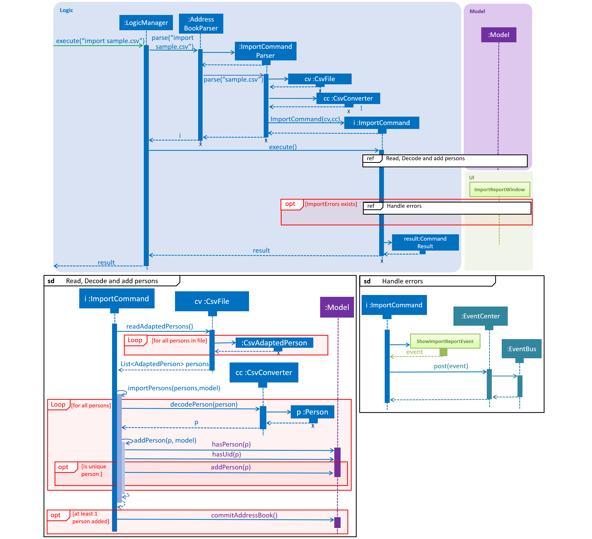

Summary of contributions
-
Major enhancement: added the ability to import/export guests using CSV files
-
What it does: Allows users to export and import guests using CSV files. For unsuccessful imports, an import report window will be generated to show the offending section of data and its associated issues.
-
Justification: The import feature is critical to the application because it allows event planners to save time by adding guests in batches. The export feature also allows event planners to share guest data easily.
-
Highlights: This enhancement is designed to support future file formats easily. This required an in-depth analysis of design alternatives.
-
-
Minor enhancement: added utility class to generate QR codes
-
Credits: XZing Core
-
-
Minor enhancement: added a full preview of guests in the user interface
-
Minor enhancement: remodelled the guest list in the user interface
-
Code contributed: [Functional code] [Test code] {give links to collated code files}
-
Other contributions:
-
Project management:
-
Updated about us page
-
-
Community:
-
PRs reviewed: https://github.com, https://github.com, https://github.com, https://github.com
-
-
{you can add/remove categories in the list above}
Contributions to the User Guide
Given below are sections I contributed to the User Guide. They showcase my ability to write documentation targeting end-users. |
Import guests from CSV file : import
Imports guests with data from a specified CSV file. The structure for the guest fields in the CSV file is predefined and can be found at CSV Guest List Format.
Format: import FILE_PATH
-
No existing guest in the guest list will be deleted due to the import.
-
FILE_PATHshall only be a relative or an absolute file path.-
Relative file path is relative to where the application Jar file is located.
-
-
There is no guaranteed ordering of guests after each import.
-
Importation of guests which already exist will be skipped.
-
A guest will be classified as an existing guest if it has the same name and matching phone number or email address with an existing guest in the guest list.
-
-
Importation of badly formatted guests will be skipped.
-
The CSV guest entries which are badly formatted or those which corresponds to an existing guest in the guest list, will trigger an import report window as shown in figure 1.
|

Examples:
-
import directory/subdirectory/guestlist.csv
You will populate the guest list with the data imported from the CSV file in the specified path. === Exporting guests to CSV file :export
Exports guests' data to a specified CSV file. The structure for the guest fields in the CSV file is predefined and can be found at CSV Guest List Format.
Format: export FILE_PATH
Examples:
-
export directory/subdirectory/guestlist.csv
You will export the currently filtered guest list entries into a CSV file in the specified path.== CSV Guest List Format
The import and export command will work with CSV files according to the predefined format below
Format: NAME,PHONE_NUMBER,EMAIL,PAYMENT,[TAG]
Example: sample CSV file
|
Individual guest fields shall not contain any commas. |
Contributions to the Developer Guide
Given below are sections I contributed to the Developer Guide. They showcase my ability to write technical documentation and the technical depth of my contributions to the project. |
Import/Export Command
Current Implementation
The import and export command enables batch importation and exportation of people into and out of the guest list. Currently the commands only support comma-separated value file format (CSV), however, it is open for the addition of new formats.
The Import/Export features are mainly facilitated by objects of 2 classes. The CsvFile and CsvConverter objects. The following class diagram shows the relationship between the classes involved in the import/export.

The CsvConverter class enables us decode/encode between the Person class and the desired format (CSV). The CsvConverter class implements PersonConverter interface which requires the implementing class to be able to decode/encode Person objects to the desired format.
The 'CsvFile' class enables us to read and write 'AdaptedPerson' to a file. CsvFile Implements the SupportedFile class which requires it to read and write lists of AdaptedPerson objects.
CsvAdaptedPerson extends AdaptedPerson, it represents a guest in the respective file formats, which our case is CSV.
The import command will first read the csv file and loop through all the guest data and add them into the model. Badly formatted csv lines will be skipped and the user are given feedback on the number of successful imports in the CommandResult Ui component. The following sequence diagram shows how the Import operation works:
 |
|

The export command will only export the currently filtered list so as to allow users to select specific groups of people. The following sequence diagram shows how the Export operation works:
|
|


Given below is an example usage scenario and how to support new file formats (Eg. VCard).
Step 1. Create new class to extend AdaptedPerson abstract class.
Eg. VcardAdaptedPerson This will represent the a guest in the VCard file format.
Step 2. Create new class to implement PersonConverter interface. Implement the encodePerson and decodePerson method.
Eg. VcardConverter The methods in this class, contains the logic to convert between the `Person` and `AdaptedPerson` objects.
Step 3. Create new class to implement CsvFile interface. Implement readAdaptedPersons and writeAdaptedPersons.
Eg. VcardFile The above mentioned methods will allow you to interface with the underlying files.
Step 4. Add checks in the ImportCommandParser and ExportCommandParser to allow the application to call the classes that you have created.
Design Considerations
Aspect: How to implement decoding/encoding functionality in Import/Export command
-
Alternative 1 (current choice): import & export command be able to do accept a general PersonConverter
-
Pros: Reduction in code duplication when supporting other file-formats in the future. Easier to mock and do unit tests.
-
Cons: More complicated to implement.
-
-
Alternative 2: Each format has its own command which knows how to do the required conversion
-
Pros: We do not need to check for the required import/export format required.
-
Cons: Higher testing overhead for possible numerous types of export & import command. Duplicated boilerplate code.
-
Aspect: How to implement the reading/writing of file functionality in Import/Export command
-
Alternative 1: Abstract the writing/reading of files into separate classes,
SupportedFileinterface andCsvFileclass (current choice)-
Pros: Able to add support for other file formats with changing exisiting code.
-
Cons: Increased code complexity.
-
-
Alternative 2: Use a utility class with static methods
-
Pros: Simple to implement.
-
Cons: Violates open-close principle. Code will only work for CSV files. Tightly coupled.
-